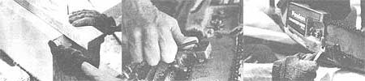

[1] Before nailing the guide board down, measure the width you wish to cut, allowing for the offset distance from the rail edge to the cutting bar. The guide rail should extend beyond the log end. [2] The Lumbermaker uses the setscrews to anchor the saw's guide bar. Tighten the two bottom screws, then ""snug up"" the top screw. The screws tended to loosen during use, necessitating retightening. [3] The Beam Machine uses two setscrews (actually, 3/8""-diameter bolts) to secure the guide bar.